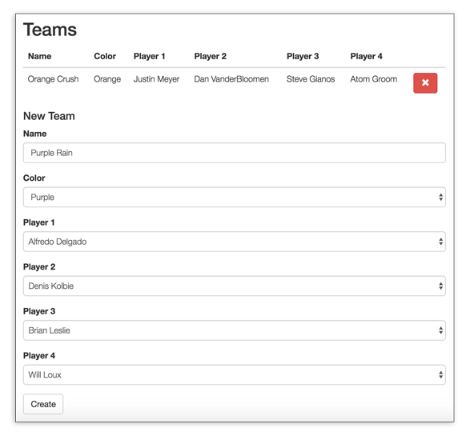
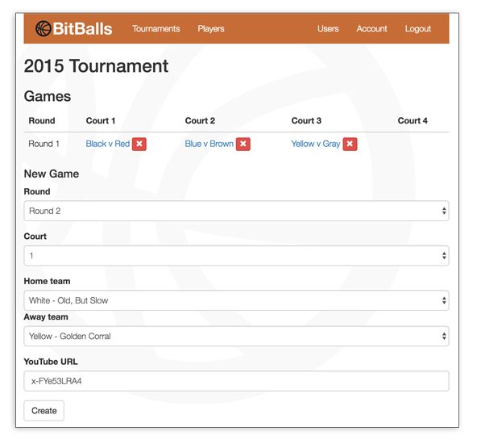
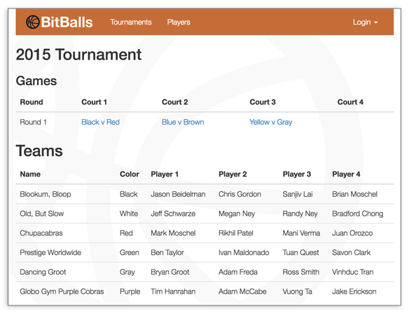

Example: Bitballs
In this guide, you'll learn how Bitballs - a charity basketball tournament management application - works. Specifically, this guide will walk through the implementation of the following behaviors or functionality:
- Registration, login, user sessions, and access rights.
- Handling relationships between model types.
- Setup node services and server-side rendering on the same process.
- How to turn off parts of the app that should not be server-side rendered.
The code for Bitballs can be found on GitHub. To install and run it locally, follow its development setup instructions.
Bitballs was written to help organize Bitovi's yearly charity basketball tournament for the American Heart and Stroke Association. Justin Meyer, one of Bitovi's founders, and DoneJS core contributor had a stroke. Read about his experience and the purpose of the tournament here.
The application allows admins, who manage the tournament, to:
Create an account (and verify their email address):

Login:

Create, edit, and delete players:

Create, edit, and delete tournaments:

Create teams of players for a tournament:

Create and delete games for a tournament:

Add and remove stats for a game while watching it on YouTube:

Visitors who are not admins are only able to view the list of players, tournaments, and game details:

High Level Architecture
Bitballs uses the following technology organized by technology layers:
Storage
Server and Services
Client
Testing
Hosting
Documentation
.
Folder organization
The bitballs codebase can be thought of as two applications:
/public./and all other folders except/public.First, lets checkout the server side parts:
Now, lets checkout the contents of the
/publicfolder:Data Model and Service layer
Bitballs has the following tables and therefore data types:
The server also has a concept of a Session. The Session can be thought of as having a User.
The restful service layer provides the following urls (each links to their corresponding docs):
/services/tournaments/services/players/services/teams/services/games/services/stats/services/users/services/sessionThe database-backed services, like
/services/teamsfollow a subset of Rest relational algebra.GET /services/{plural_type}?...GET /services/{plural_type}/{id}POST /services/{plural_type}sPUT /services/{plural_type}/{id}DELETE /services/{plural_type}/{id}This means that you can get all Teams like:
Or get list of teams for a particular tournament like:
But critically for handling data relationships, you can tell the server to bring in related data like:
Get a single Team like:
Create a team like:
Update a team like:
Destroy a team like:
The
/services/sessionapi is singular because there can only be one session available to a particular user. We'll discuss this more in the Users, Sessions, and Access sectionComponent map
The following diagrams show which component is responsible for each part of the application:
Users, Sessions, and Access
This section details Bitballs' access rights system. Learn how users are created, sessions are established, and access rights are handled.
Behavior
Bitballs has a very simple access rights system. Only admin users can manipulate tournament data.
And only admin users can set another user as an admin user.
Non-admin users can read data.

Non-admins can register themselves and verify their email address.
The only exception is when there are no users. In this situation, the first created user will be automatically set as the admin user.
Responsibilities
The following breaks down what parts of the app perform which parts of managing users, sessions and access rights:
The
/services/usersservice handles creating, reading, updating and deleting (CRUDing) of users.The
/services/sessionservice handles establishing a cookie-based session for a particular user. This will add areq.userproperty to all server request objects when there is a logged in user.All other services use
req.user.isAdminto determine if the current user has access rights for the given service.The
<user-details>component handles creating a new user.The
<user-list>component allows an admin user to set other users as admin.The AppViewModel has a
sessionproperty that uses the [Session] model to request and store the available session. You can read the session's user and if they are an admin like:The
<bitballs-navigation>component allows someone to login and change theAppViewModel's session.All other page-level components get passed the
AppViewModel'sisAdminproperty. They use it to determine which functionality should be displayed.Creating a user
When a user navigates to
/register, the<user-details>component creates a form that takes a user's email and password.When the form is submitted, an instance of the client
Usermodel is created and sent to the/services/usersservice.The service creates a user and sends the user an email to verify their email address.
Getting, creating, or destroying a session
The following details how Bitballs:
Getting the session
When the client application starts, the app checks if it has a session.
This is done by defining a
sessionproperty that will use the Session model to retrieve the current session. If there is a session, it will be stored on the AppViewModel.The Session model makes a request to
GET /services/session. By default, AJAX requests are sent with the user's cookies.Passport is used and configured to add a
req.userproperty to every request object when a user logs in. That user object is returned, minus any private data, as associated data on the session:This means that once a user logs in,
GET /services/sessionresponds with an object like:We like to keep session data distinct from User data. In a more complex application, additional session information could be returned that does not belong on the user. For example:
Once the response data comes back, a
sessionobject with its associatedsession.userobject will be available on the AppViewModel.The
Sessionclient model makes sure thatuseris converted into a User model and also provides anisAdminmethod that returns if admin functionality should be available:The session, its user, or the result of
isAdminis then passed to sub components depending on their needs:Finally, those components use that information to control what is shown on the page:
In more complex apps, the
userobject might include an Access Control List which might include methods to check access rights:Creating a session
Creating a session is done with the <bitballs-navigation> component. It builds a login form that takes an email and password:
When a user submits the login form its ViewModel will save an instance of the Session model. When the save is successful, it will update the AppViewModel with the new session instance.
Saving a session calls
POST /services/sessionto create a session server side. The service should operate on similar data asGET /services/session, so it's passed data like:The application looks up the user, makes sure the encrypted passwords match, and then calls
req.logIn()to setreq.userand then responds with the Session data.Destroy the session
The
<bitballs-navigation>component's template as a link that callslogout()on its ViewModel:logoutcalls destroy on the session and then removes the session from the AppViewModel:Destroying a session calls
DELETE /services/sessionto destroy a session server side. No data needs to be passed. The server simply calls passport'slogout()and responds with an empty JSON object.Server side rendering
DoneJS is able to automatically server-side render pages that use cookie based sessions. For example, if an admin logs into Bitballs and refreshes the tournament details page, they will be served a page with all of the additional forms an admin user can see.
Furthermore, they will be served a "Logout" link instead of "Login".
This works because when a browser navigates to
tournaments/5, the cookie is passed to DoneJS's server-side rendering. It adds this cookie to the virtual document used to render that page and it makes sure any AJAX requests the client makes also includes that cookie.This means that when
Session.get()is called by the AppViewModel to get the session, the right cookie information is passes to theGET /services/sessionservice and a session is established in the client.Data Relationships
In this section, we'll learn about how to manage related data in a DoneJS application. We'll describe our approach that balances performance and maintainability concerns that are vital for making high performance apps that can quickly respond to changes in design.
Performance vs Maintainability
Bitballs data model has many relationships among its data types. For example, Tournaments have many Games and have many Teams. Games have Teams and Stats. And Teams have Players.
The tournament details page not only needs to load a tournament, it needs to load that tournament's games, teams, and all players.
The game details page needs to load the game, all of the game's stats, teams, and the teams players.
Bitballs needs to be able to load these pages quickly. Using a very simplistic RESTful service layer, the client might have to do the following to load a game details page:
That's 12 requests! But that's not the worst part. The worst part is that at least 3 serial batches of requests must happen. We can't load players until we have teams. We can't load teams until we have the game.
Instead, we'd want to load a game and get back its data with its nested teams and players and stats like:
What you don't want to do, is make
/services/games/{id}always return this nested data because you don't know the future of the game details page or all of the uses of the/services/games/{id}service. For example, it's possible someone might want to simply know the final score of a game. In this case, the teams and players would not be necessary.So how do you reconcile performance needs with the certainty that application requirements and the uses of your services will change?
The answer is making expressive Restful services and client Models and ViewModels that are able to work with them.
Expressive services
Expressive services allow the client to specify some of the raw behavior that normally goes into database requests while being adaptive to changes in the database.
They are normally built by mapping parts of the query string to clauses in a backend Object Relational Mapper (ORM).
For instance, the game details page requests a game with its related fields like:
This results in an AJAX request like:
withRelatedallows the client to control the the Database'sJOINclause.Instead of processing the querystring ourselves and build the corresponding Database request, most ORMs make it easy to do the expected thing.
Bitballs uses Bookshelf as its ORM. It allows us to define relationships between a
Gameand other server-side models:It does a similar thing for
Team:Once these server Models are in place, it is extremely easy to make a service that can dynamically include related data:
This setup also lets us be very adaptive to changes in the database. For instance, if a game suddenly has comments, we could make the following work:
By creating a
Commentmodel and changingGameto look like:The goal should be changing your service code as little as possible. Instead, you should be changing your ORMs and the service code adapts to them. In Bitballs' case this means we shouldn't be changing what's in
/services, instead we should be changing what's in/modelsas the database changes.Related data is not the only behavior that your expressive service layer should provide:
WHERE)OFFSETandLIMIT)SORTBY)For example, I can get all of team 5's games like:
This happens for free because we pass the querystrng directly to bookshelf:
Most server technologies have an ORM that can make this process straightforward. It's generally best to use a service API that closely matches the API of your ORM.
Models and ViewModels
Once you've settled on an expressive service API, you need to make Models that connect to it and handle associated data. And if you want any of the advanced behavior of can-connect, you have to create a relational algebra that understands the service API.
Connecting to a service
Bitballs' client Models are can-connect supermodels. So a type and list type is defined:
And they are connected to a url:
Relational Algebra
To match the query parameters our service and eventually Bookshelf expects, we need to define a custom set algebra. For
Game, it looks like this:Defining related properties
Because Game data can come back with a
homeTeam,awayTeamandstatsproperty, we make sure those are created as the right type:Notice that
stats.setis setting the __listSet property of the stats. This is necessary for can-connect's real-time behavior. When stats are created for this game, they will automatically appear in this list.Defining computed properties
Gamealso hasteamsandplayerscomputed properties that derive their value from related fields:In
players,team.playersis actually making use of a similar computedplayersproperty in the Team client model.Defining intermediate computed properties to avoid recomputing.
Sometimes ViewModels mash up Model data. For example, the
<tournament-details>component makes four requests in parallel:This gets a tournament, the games for a tournament, the teams for a tournament, and all the players. All the players are needed to allow the admin to pick teams. This means it would be wasteful to use
withRelated: ["player1","player2",...]on the Team request because all players are already loading.But this makes it tricky to list a team's players because all we have are player ids on each team:
A naive solution would be to make a
getByIdmethod onPlayer.Listlike:And then use that in the template to look up the player:
The problem with this is that each
.getByIdcall is linear search. Instead, we can keep a mapping of player ids to players like:And make a
getByIduseidMaplike:Now when
.getByIdis used in the templateplayerIdMapwill only ever be calculated once.SSR and node services
In this section, we'll learn about how to setup DoneJS's server-side rendering in the same process as other NodeJS services. We'll also detail how 404s and other HTTP response codes can be communicated from your client app to DoneJS's server-side rendering.
Setup
Bitballs is written using Express middleware. With express you order middleware functions to handle different requests. Bitballs sets up its middleware in /index.js. The middleware is setup in the following order:
/publicfolder./servicesfolder.public/service.jsIn general, server-side should be last in the line of middleware handlers. Static assets and services should be the first to respond to a given URL.
public/service.jsuses done-ssr-middleware to export a middleware handler like:This passes what is needed for StealJS to load the client app to
ssr.ssruses StealJS to load the app, and returns an express handler that renders the client app. That express handler is assigned to the"/"route inindex.js:404s
In general, there are two situations where server-side rendering should respond with a 404 status code:
/total-mistake./tournaments/999.done-ssr-middleware uses the
statusCodeproperty on the AppViewModel as the status of the http response.For Bitballs, we implemented
statusCodeas a define getter as follows:statusCodederives its value from two places that reflect the two common404situations.404 when URL doesn't match a routing rule
statusCodefirst checks if thepageComponentConfigis specifying a specificstatusCodeto be given.pageComponentConfigonly specifies astatusCodewhen its state doesn't match a valid route:When the state doesn't match a valid route, users will see the contents of the
404.component.With this setup, we could also check the session and include
401 Unauthorizedstatus codes for pages that are only visible to an authenticated user.404 when an item doesn't exist.
Next,
statusCodechecks thepagePromiseproperty. If thepagePromiseresolves successfully, a200status code is returned. If thepagePromiseis rejected, a404status code is returned.pagePromiseis a promise that is passed by a child component up to theAppViewModel. Notice how <game-details> passes itsgamePromiseas thepagePromiselike{^game-promise}='./pagePromise':<game-details>'s
gamePromiseproperty is used to load the game's data:If there is no game at
gameId, the promise will be rejected andstatusCodewill be set to404.Turn off SSR
In this section, we'll learn about how prevent code from running during server-side rendering.
While DoneJS's virtual DOM approximates a real DOM and browser, there is much that it cannot do such as provide element dimension information.
Typically, this doesn't affect the code you write because server-side rendering only runs code involved in the initial render of a page.
However, in Bitballs case, the game details page has an embedded YouTube player. The YouTube API code needed to load a player will not work in DoneJS's default server-side environment.
To detect if your code is running in
NodeJSand therefore being server-side rendered, you can use steal-platform like:To prevent loading YouTube's API in node, we reject the promise that would normally resolve to YouTube's API as follows: